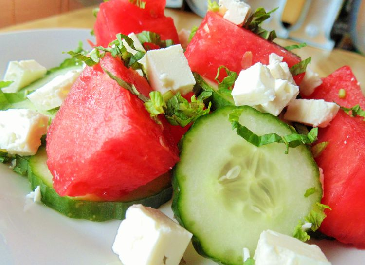

Watermelon Cucumber Salad

Description
All of my friends loved this tasty, refreshing watermelon salad,
so I thought I would add it as my first Allrecipes recipe.
It was inspired by another recipe on here, but strayed far enough
from the original that I thought it deserved its own recipe. Enjoy.
Ingredients
- 1 large seedless watermelon, cut into 1-inch cubes
- 2 cucumbers, thinly sliced
- 12 leaves fresh mint, thinly sliced
- ¼ cup olive oil
- 2 tablespoons apple cider vinegar
- coarse salt and ground black pepper to taste
- 1 cup crumbled feta cheese
Steps
- Gently mix watermelon, cucumbers, and mint in a large bowl.
Whisk olive oil, vinegar, salt, and pepper together in a small bowl.
Drizzle over salad and gently toss to coat. Add feta cheese and gently mix